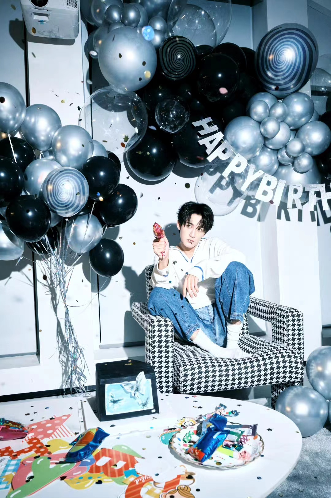

年岁更迭，顺意长存。又逢金秋至，新的一岁如期到来。
破而后立，过去一年里，你向外探索，向内积淀，不断拓展自我边界。
“希望自己能够拍更多好的作品，把他们留在观众心中，也留在自己心中。”
于是过去一年中，剧组的几百个日夜，你兢兢业业，对自己严苛要求，剧本上满满的记号标记，是你与角色的秘密对话。片场的灵感迸发，和激发出的汹涌创作欲望，最终连接与角色之间的回响。镜头前后反复揣摩、探讨、审视，力求层层突破，精进演技，打破角色「高度」。
这一年里，你依旧不给自己设限，不惧挑战，与不同类型角色相遇，丰富角色的多面性，累积「厚度」，拓宽“角色阈值”。
作为演员，你以敬畏之心对待角色，以真诚之心对待观众，不骄不躁，厚积薄发。作为歌手，对待音乐你依然有着自己的坚持，用心歌唱，为歌曲注入灵魂。作为舞者，每一次舞台的完美呈现，离不开你台下一遍遍的练习和细节的把控。
工作之余，你也有属于自己汲取能量的方式。
松弛自在，无处不散发着生活的「热度」。
偶遇粉色的夕阳，会让你秒变浪漫收藏家，忍不住想要记录下美好的时刻。会注意到各种没见过的小虫子，蜻蜓也会让你停下脚步观察。呆球的小房子上面是你贴的可爱贴纸，也会在收工后的半夜用窗帘盖住自己观察夜晚的天空。做一个浪漫、童趣、温柔的大人，真的超酷！
“慢慢来，是会有惊喜的。”现在的你是沉毅温和的，是笃定的。往事不忧，未来不惧，因为逐光前行的路上，总会有所收获。
山止川行，行不可阻。新的一岁，继续满怀热爱与憧憬，探寻人生维度。愿你不惧岁长，永远被爱包围！
生日快乐 @MIC檀健次JC-T
